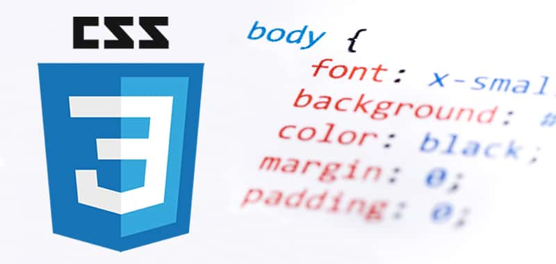

CSS no trabaja solamente con etiquetas simples,sino que permite seleccionar elementos de manera muy precisa mediante:
El posicionamiento en CSS permite controlar cómo se ubican los elementos dentro de una página web. Esto se logra mediante la propiedad position, que define la relación del elemento con el flujo del documento y con otros elementos.
Para lograr un código CSS eficiente y fácil de mantener, es importante seguir ciertas buenas prácticas. En primer lugar, se recomienda separar el contenido del diseño, evitando el uso de estilos en línea y utilizando archivos CSS externos.
También es fundamental mantener una buena organización del código,agrupando las reglas de manera lógica y utilizando nombres de clases claros y descriptivos. Esto facilita la lectura y el trabajo en equipo. Una metodología común es usar estructuras de nombrado que permitan identificar fácilmente la función de cada elemento.
Otra práctica importante es reutilzar estilos,evitando repetir código innecesariamente. Esto no solo reduce el tamaño del archivo, sino que también simplifica futuras modificaciones.
